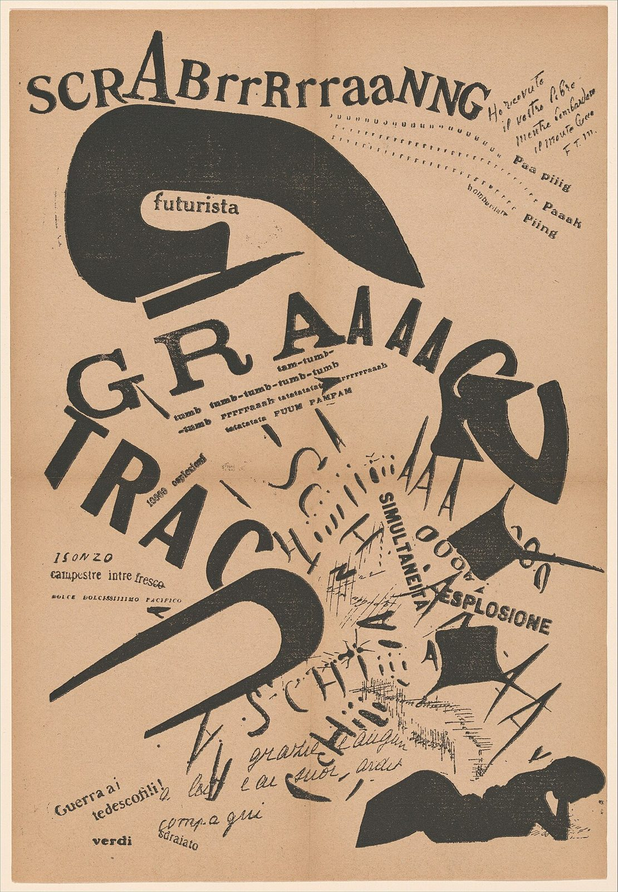

References / Book / 474
In the Evening, Lying on Her Bed,
She Reread the Letter from Her Artilleryman at the Front
F. T. Marinetti’s best-known words-in-freedom plate: a woman reads a letter from the front, and the page explodes with the sounds of the battle it describes, in letters of every size, face, and angle.
- Source
- The Metropolitan Museum of Art: Le Soir, couchée dans son lit, elle relisait la lettre de son artilleur au front (1995.511.1)
- Creator
- Filippo Tommaso Marinetti
- Made
- Created 1917, published 1919
- Style
- Italian Futurism (agent-proposed, not yet reviewed by a person)
- Moods
- Loud, aggressive, exuberant
- Evidence
- Downloaded and inspected the Met’s image as uploaded to Wikimedia Commons,_published_in_Les_Mots_en_libert%C3%A9_futuristes_MET_DP371749.jpg) (original 2690 × 3877 px; a 1110 × 1600 px rendering was inspected and stored). The physical copy is the Met’s sheet, accession number 1995.511.1, as stated in the Commons record. The Met API and website were not read directly.
- Reviewed
- Rights
- Open license, stored. License: CC0-1.0. Rights policy
Context
Letterpress, 34.9 × 23.2 cm. Created 1917 and published 1919 in Marinetti’s book Les mots en liberté futuristes. The Metropolitan Museum of Art, Drawings and Prints, 1995.511.1, gift of W. Michael Sheehe, 1995. Commons record from the Met,_published_in_Les_Mots_en_libert%C3%A9_futuristes_MET_DP371749.jpg).
The Art Institute of Chicago also holds Les mots en liberté futuristes (Milan: Edizioni futuriste di “Poesia”, 1919), object 238061, but marks it as not public domain.
Observed
- At the top, “SCRABrrrRrraaNNG” runs in mixed capitals and lower case of different faces and sizes.
- Below, a huge black hook shape holds the small word “futurista”.
- Across the middle, “GRAAAAG” and “TRAC” are set in very large letters that tilt in different directions, some serif and some sans serif.
- Small lines such as “tumb tumb-tumb-tumb-tumb” and “FUUM PAMPAM” are set in tiny bold type between the giant letters.
- Words “SIMULTANEITÀ” and “ESPLOSIONE” run at steep angles near the center; letters “A” and “SCHI” scatter outward like fragments.
- Rows of small letters at upper right curve like a trajectory; handwritten lines are reproduced at upper right and lower left.
- A second black hook points from the lower left into the center; a black silhouette of a reclining woman sits at lower right.
- Printed in black only on brown-buff paper with a center fold.
Why it belongs
The page turns a letter into the battle it describes: the reading woman is small and quiet in the corner, and the war is the typography. Size and angle stand for loudness and direction.
The black hook shapes act as lines of force and organize the scattered words into two sweeping movements.
Borrow
Use letter size as volume: one shouted word many times larger than the text around it.
Mix serif and sans serif capitals inside one word.
Set a small quiet figure or line against the noise to give scale.
Use one ink only and let angles and sizes do the work.
Measured
Machine-extracted by tools/image-traits.py on . Full measurement.
- Mean chroma
- 0.21
- Palette
- #dab796 47%
- #45423c 19%
- #cfa883 18%
- #f5e5d2 5%
- #a68d74 2%
- #b4997e 2%
- #957f69 2%
- #83705c 2%

